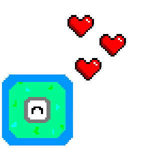

The digital tidepool is a cellular simulation that takes place entirely in your browser. Based on a set of inital parameters, the simulation
will run its course to completion. As an observer of the tidepool, you have the power to choose the starting values of different parameters that
influence the development of the environment.
There are two forces at odds in the tidepool: Greens and Eaters.
Greens act as the foundation of the ecosystem. They might be some kind of mold, maybe bacteria, maybe slime, maybe code.
It's difficult to say for sure. What we do know however is that like most living things, the Greens seek to grow and expand their
dominance over their environment. Given the opportunity, they will not hesistate to develop into the dominant lifeform of the tidepool.
Eaters act as the primary consumers of the ecosystem and survive by feeding on the Greens. While they may be short lived, their ability to
undergo asexual reproduction makes them a powerful check on the Greens power in the tidepool - A single Eater allowed to reproduce has the
potential to devestate the Green population... an act which may doom the Eaters themselves.
Eaters undergoing reproduction will remain stationary and adopt a dark blue shade. Desceased Eaters appear as a faded white husk of their original forms.
Under the "Parameters" tab, you can find several different parameters available to customize, as well as the starting populations of each species in the tidepool.
This project was inspired heavily by the Game of Life, created by the late John Conway. The game of life is a no-player game where a simple set of rules and starting conditions lead to complex and unpredicable interactions downstream. If you're interested in the developmental process behind this project, visit my blog. If you'd like access to the source code for the Digital Tidepool, you can find the github repository here.
Thank you very much for stopping by!